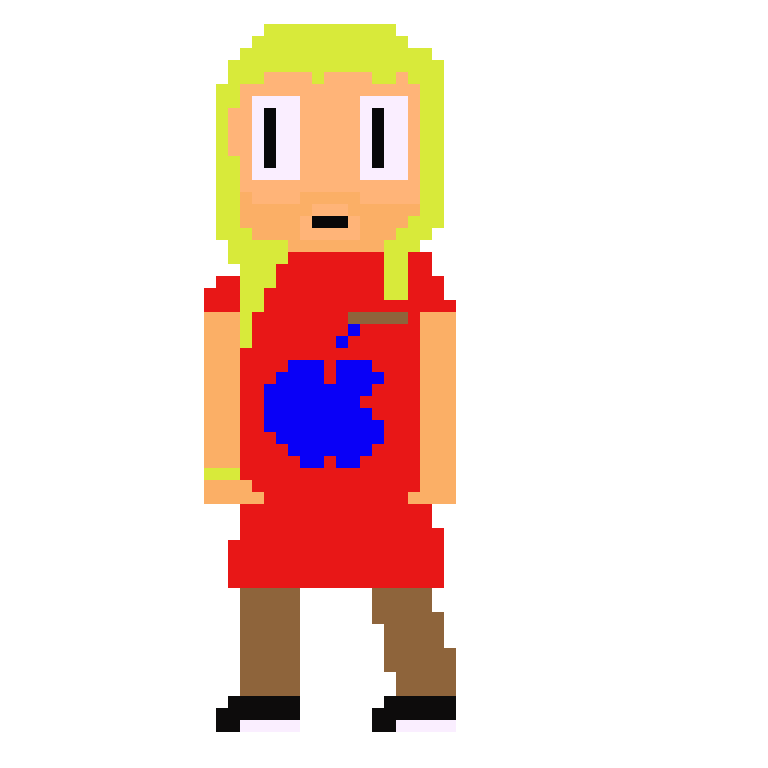
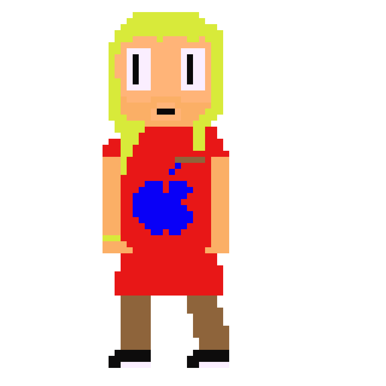

et toi comment t'es devenu ubunter ?
Je crois me souvenir que ça s'est passé à la prairie
je visitais l'école, j'étais curieuse
Ca a du être HORRIBLE...!
T'as du avoir SUPER mal ?
bah...en fait ç'a m'est tombé dessus